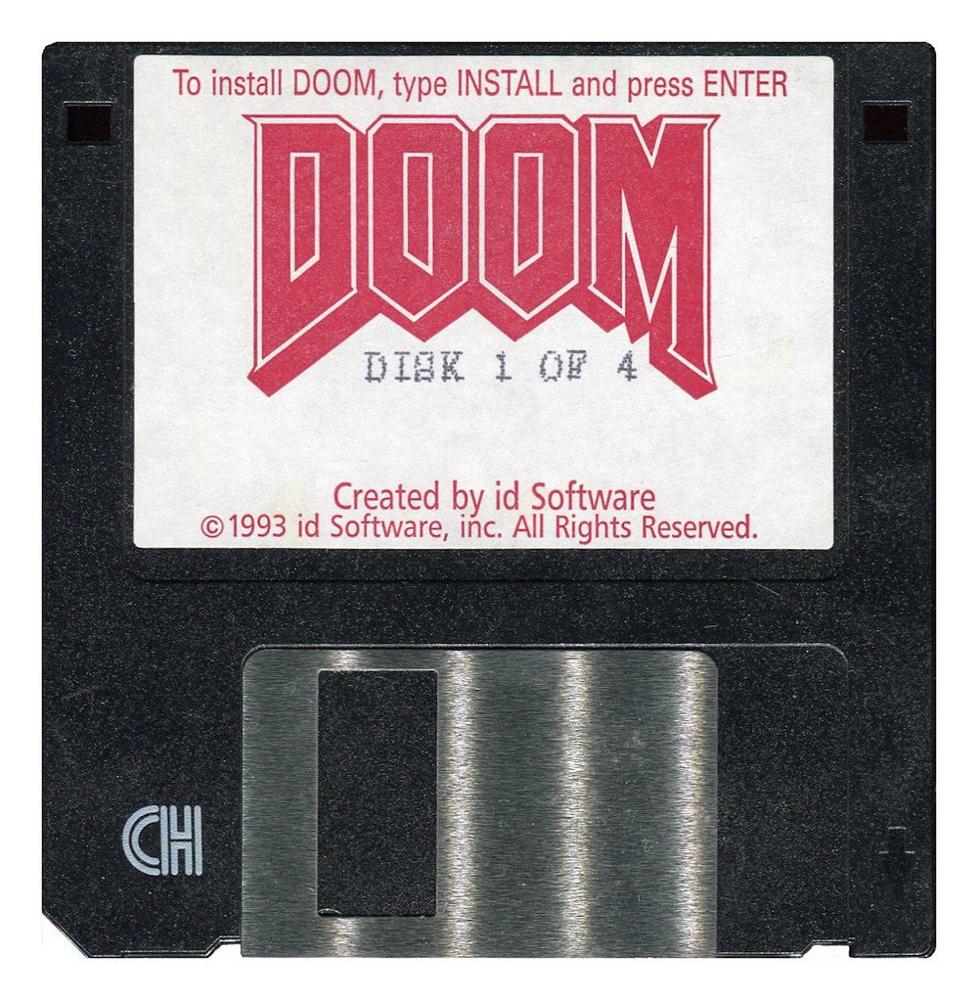

Exhibit 011993

1993
Doom
Doom put the player behind a first-person camera and made speed itself the appeal. Movement, aiming, and the shape of the room all happened in the same view.
Why it mattered
It taught players to read a 3D space through a camera, and it made the mouse and keyboard feel like a way to move through a world.